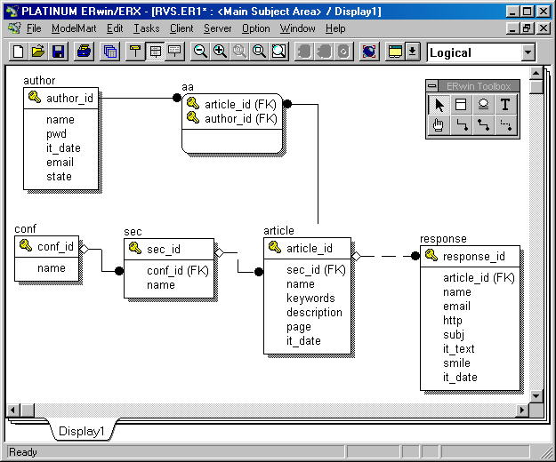
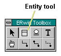
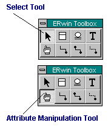

CASE-средство проектирования баз данных ERWin
CASE - сокращение от Computer Aided Software Engineering. CASE-средства позволяют
автоматизировать создание информационных систем на протяжение всего жизненного цикла.
Имеются CASE-средства для моделирования, проектирования, разработки, тестирования, постороения
отчетов, управления версиями программного продукта и другие.
В этом параграфе мы рассмотрим применение только одного
программного продукта ERWin. В ERWin удобно рисовать структуру базы данных.
Для работы с MySQL ничего больше от ERWin'a добиться нельзя, т.к. MySQL он не поддерживает.
Для других баз данных ERWin может на основе структуры базы данных сгенерировать SQL-код
этой структуры. Или же наоборот, по SQL-коду сгенерировать внешний вид структуры базы данных.
Проектирование происходит на двух уровнях: логическом и физическом. На логическом уровне
проектируемая структура базы данных не связана с конкретной СУБД. В логической модели
отображаются сущности, атрибуты и отношения между сущностями. Для работы с MySQL в ERWin
нам требуется получить только красивую картинку структуры базы данных, поэтому физическая модель нам не
интересна. В физической модели можно выбрать конкретную СУБД и в зависимости от этой СУБД
настроить типы атрибутов.

Создание сущностей, отношений между ними, перетаскивание таблиц осуществляется при
помощи инструментов с панели ERWin Toolbox.
|  | Инструмент для создания сущностей.
| |  | С помощью инструмента выбора (Select tool) можно перемещать сущности
вместе с атрибутами. Имеется также инструмент для перемещения атрибутов - Attribute Manipulation Tool.
| | | Для создания отношений между сущностями имеется
два инструмента. Для создания отношений, в которых определено, как соотносятся записи одной таблице по
отношению к другой используется инструмент - identifying relationship. В этом случае первичный ключ
одной таблицы добавляется, как внешний ключ во вторую таблицу, при этом во второй таблице он является
частью составного ключа. Так, например, создано отношение между таблицей авторов и
таблицей aa. Для создания отношений, в которых не определено, как соотносятся записи используется
- non-identifying relationship.
|
В ERWin по правой кнопке мыши можно настроить детальность отображения структуры базы.
Данный параграф не ставит задачей дать подробное описание системы ERWin, а лишь дать
первоначальную точку отправления в освоение этого средства. Самое главное - теоретические
основы были подробно разобраны в параграфе "Проектирование баз данных". Овладев ими вам будет
несложно освоить систему ERWin. Базу данных проектируете вы, а не ERWin, которое только
является, всего-навсего, лишь инструментом в ваших руках. В ERWin есть хороший самоучитель,
который поможет вам быстро освоится. Здесь же не имеет смысла переписывать этот самоучитель,
документируя все пункты меню ERWin.
|